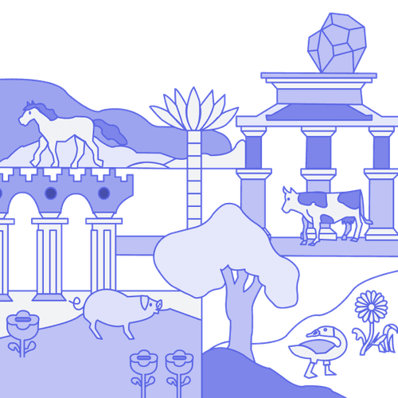

Mit der Academy erhaltet ihr im Business-Plan praxisnahe Lernmodule rund um Facilitation und wirksame Transformation.
Gemeinsam mit 9 Spaces zeigt Plan International Deutschland, wie wertebasiertes Arbeiten Orientierung gibt – nach innen wie nach außen.

Dieses Tool hilft euch dabei, belastende Tätigkeiten offenzulegen und innerhalb eures Teams zu tauschen.
Wie gut passen deine Tätigkeiten zu deinen Stärken? Ein Entwicklungs-Tool, mit dem du den Impact deiner aktuellen Rollen und Verantwortlichkeiten reflektieren kannst
Wie du dein Leben von digitalem Ballast befreist.
Dieses Tool hilft dir dabei, produktiv zu sein – ohne Stress.